Try the new view →
9618-2021-mj-31-q09
May/June 2021 · Paper 31 · Question 9 · 8 marks
9(a) One mark for each correct marking point (Max 2) 2
• Imperative languages use variables
• … which are changed using (assignment) statements
• … they rely on a method of repetition / iteration.
• The statements provide a sequence of commands for the computer to
perform
• … in the order written / given
• … each line of code changes something in the program run.
9(b) One mark for each correct marking point (Max 2) 2
• Instructs a program on what needs to be done instead of how to do it
• ... using facts and rules
• … using queries to satisfy goals.
• Can be logical or functional
• Logical - states a program as a set of logical relations
• Functional – constructed by applying functions to arguments / uses a
mathematical style
© UCLES 2021 Page 9 of 10
9(c) One mark for each correct programming paradigm (Max 4) 4
Program code example Programming paradigm
male(john).
female(ethel). Declarative
parent(john, ethel).
FOR Counter = 1 TO 20
X = X * Counter Procedural / imperative
NEXT Counter
Start: LDD Counter
INC ACC Low-level / assembly
STO Counter
public class Vehicle
{
private speed;
public Vehicle()
Object oriented / (OOP)
{
speed = 0;
}
}
© UCLES 2021 Page 10 of 10
Official mark scheme pages: 9, 10 · source PDF URL
9618-2021-mj-32-q09
May/June 2021 · Paper 32 · Question 9 · 8 marks
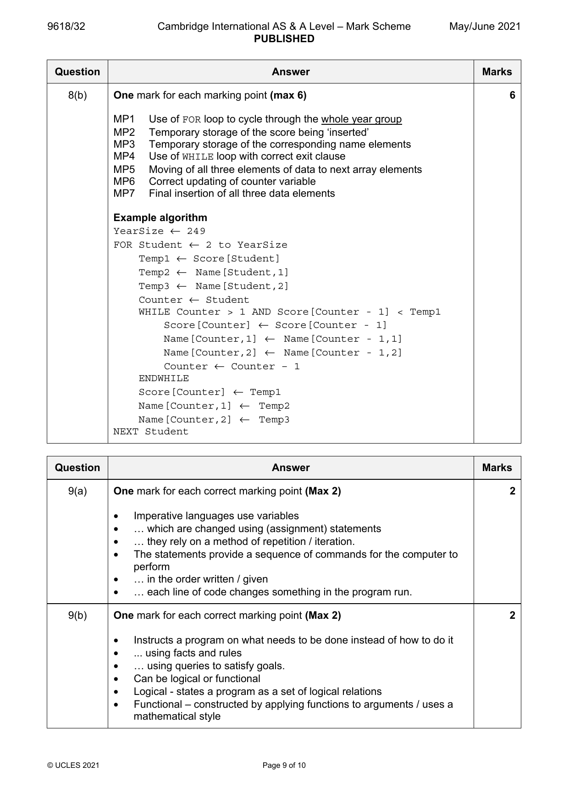
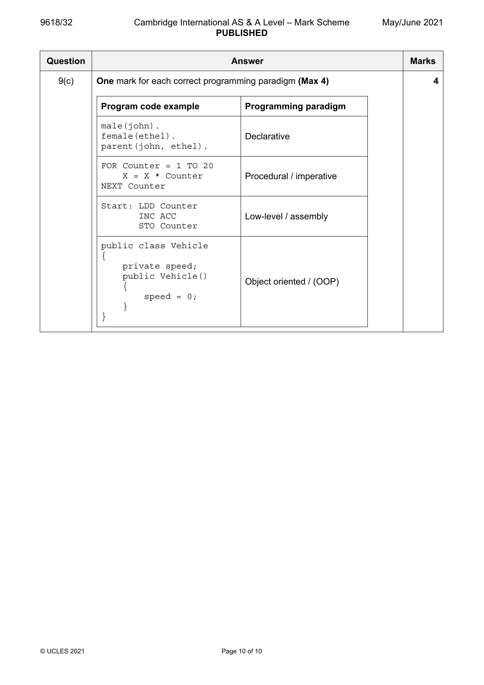
9(a) One mark for each correct marking point (Max 2) 2
• Imperative languages use variables
• … which are changed using (assignment) statements
• … they rely on a method of repetition / iteration.
• The statements provide a sequence of commands for the computer to
perform
• … in the order written / given
• … each line of code changes something in the program run.
9(b) One mark for each correct marking point (Max 2) 2
• Instructs a program on what needs to be done instead of how to do it
• ... using facts and rules
• … using queries to satisfy goals.
• Can be logical or functional
• Logical - states a program as a set of logical relations
• Functional – constructed by applying functions to arguments / uses a
mathematical style
© UCLES 2021 Page 9 of 10
9(c) One mark for each correct programming paradigm (Max 4) 4
Program code example Programming paradigm
male(john).
female(ethel). Declarative
parent(john, ethel).
FOR Counter = 1 TO 20
X = X * Counter Procedural / imperative
NEXT Counter
Start: LDD Counter
INC ACC Low-level / assembly
STO Counter
public class Vehicle
{
private speed;
public Vehicle()
Object oriented / (OOP)
{
speed = 0;
}
}
© UCLES 2021 Page 10 of 10
Official mark scheme pages: 9, 10 · source PDF URL
9618-2021-mj-33-q09
May/June 2021 · Paper 33 · Question 9 · 8 marks
9(a) One mark for each correct marking point (Max 2) 2
• Imperative languages use variables
• … which are changed using (assignment) statements
• … they rely on a method of repetition / iteration.
• The statements provide a sequence of commands for the computer to
perform
• … in the order written / given
• … each line of code changes something in the program run.
9(b) One mark for each correct marking point (Max 2) 2
• Instructs a program on what needs to be done instead of how to do it
• ... using facts and rules
• … using queries to satisfy goals.
• Can be logical or functional
• Logical - states a program as a set of logical relations
• Functional – constructed by applying functions to arguments / uses a
mathematical style
© UCLES 2021 Page 9 of 10
9(c) One mark for each correct programming paradigm (Max 4) 4
Program code example Programming paradigm
male(john).
female(ethel). Declarative
parent(john, ethel).
FOR Counter = 1 TO 20
X = X * Counter Procedural / imperative
NEXT Counter
Start: LDD Counter
INC ACC Low-level / assembly
STO Counter
public class Vehicle
{
private speed;
public Vehicle()
Object oriented / (OOP)
{
speed = 0;
}
}
© UCLES 2021 Page 10 of 10
Official mark scheme pages: 9, 10 · source PDF URL
9618-2021-on-31-q02
Oct/Nov 2021 · Paper 31 · Question 2 · 4 marks
2 One mark for each single correct line from Programming Paradigm to 4
Description
Programming Paradigm Description
Programs using the instruction set of a
processor
Declarative
Programs based on events such as
user actions or sensor outputs
Imperative
Programs using the concepts of class,
inheritance, encapsulation and
Low-level polymorphism
Programs with an explicit sequence of
commands that update the program
Object oriented state, with or without procedure calls
Programs that specify the desired
result rather than how to get to it
Question Answer Marks
Official mark scheme pages: 4 · source PDF URL
9618-2021-on-32-q02
Oct/Nov 2021 · Paper 32 · Question 2 · 4 marks
2 One mark for each single correct line from Programming Paradigm to 4
Description
Programming Paradigm Description
Programs using the instruction set of a
processor
Declarative
Programs based on events such as
user actions or sensor outputs
Imperative
Programs using the concepts of class,
inheritance, encapsulation and
Low-level polymorphism
Programs with an explicit sequence of
commands that update the program
Object oriented state, with or without procedure calls
Programs that specify the desired
result rather than how to get to it
Question Answer Marks
Official mark scheme pages: 4 · source PDF URL
9618-2022-mj-31-q02
May/June 2022 · Paper 31 · Question 2 · 6 marks
2(a) type(caracal, wild). 2
hair(caracal, short).
2(b) persian 1
2(c)(i) type(Pet, domestic). 1
2(c)(ii) spots(WildSpotty, yes) 2
,type(WildSpotty, wild).
© UCLES 2022 Page 4 of 11
Official mark scheme pages: 4 · source PDF URL
9618-2022-mj-31-q07
May/June 2022 · Paper 31 · Question 7 · 11 marks
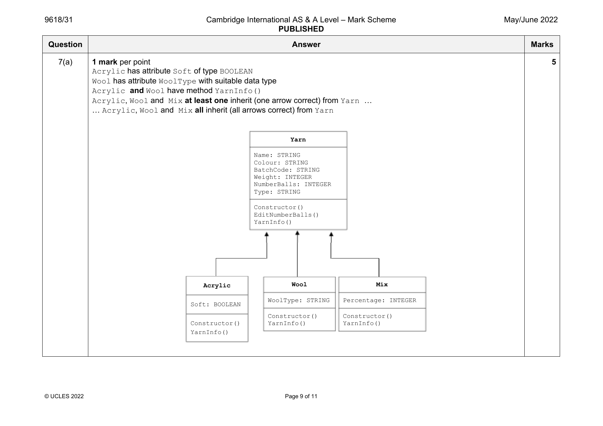
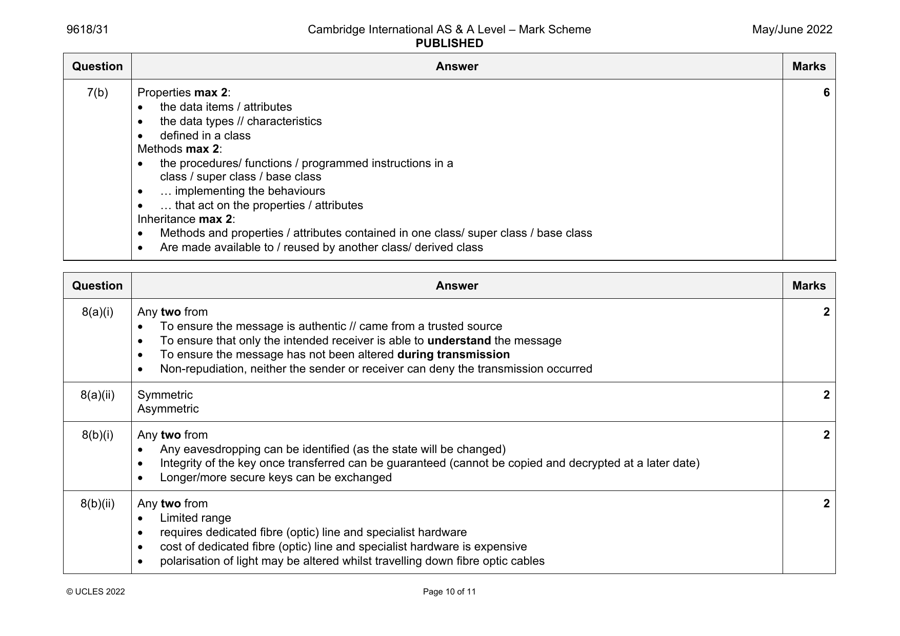
7(a) 1 mark per point 5
Acrylic has attribute Soft of type BOOLEAN
Wool has attribute WoolType with suitable data type
Acrylic and Wool have method YarnInfo()
Acrylic, Wool and Mix at least one inherit (one arrow correct) from Yarn …
… Acrylic, Wool and Mix all inherit (all arrows correct) from Yarn
Yarn
Name: STRING
Colour: STRING
BatchCode: STRING
Weight: INTEGER
NumberBalls: INTEGER
Type: STRING
Constructor()
EditNumberBalls()
YarnInfo()
Acrylic Wool Mix
WoolType: STRING Percentage: INTEGER
Soft: BOOLEAN
Constructor() Constructor()
Constructor() YarnInfo() YarnInfo()
YarnInfo()
© UCLES 2022 Page 9 of 11
7(b) Properties max 2: 6
the data items / attributes
the data types // characteristics
defined in a class
Methods max 2:
the procedures/ functions / programmed instructions in a
class / super class / base class
… implementing the behaviours
… that act on the properties / attributes
Inheritance max 2:
Methods and properties / attributes contained in one class/ super class / base class
Are made available to / reused by another class/ derived class
Question Answer Marks
Official mark scheme pages: 9, 10 · source PDF URL
9618-2022-mj-32-q01
May/June 2022 · Paper 32 · Question 1 · 9 marks
1(a) BuildingRegister.BuildingID 1067 2
BuildingRegister.BuildingGroup "house"
1(b)(i) One mark: TYPE BuildingType = 2
One mark: (house, bungalow, apartment, farm)
TYPE BuildingType = (house, bungalow, apartment, farm)
1(b)(ii) DECLARE BuildingGroup : BuildingType 1
1(b)(iii) BuildingRegister.BuildingGroup house 1
1(c)(i) PRIVATE OwnerName : STRING 1
1(c)(ii) To ensure that attributes can only be accessed by the class’s own methods 2
To enforce encapsulation // ensure they are hidden
Question Answer Marks
Official mark scheme pages: 4 · source PDF URL
9618-2022-mj-32-q02
May/June 2022 · Paper 32 · Question 2 · 7 marks
2(a) studies(sam, history). 2
tutors(nina, sam).
2(b) freya, hua // hua, freya 1
2(c) one mark for correct use of X 4
one mark for two other variables in correct positions
one mark for three correct clauses in any order
one mark for correct syntax
teaches(R, S),
studies(X, S),
tutors(R, X).
© UCLES 2022 Page 4 of 9
Official mark scheme pages: 4 · source PDF URL
9618-2022-mj-32-q09
May/June 2022 · Paper 32 · Question 9 · 4 marks
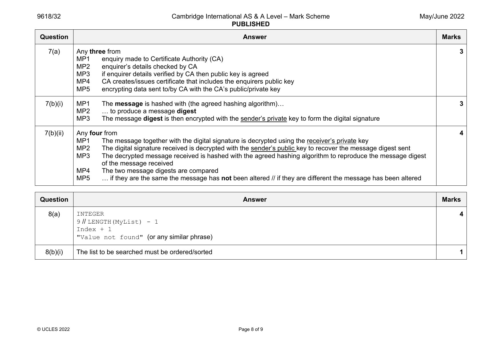
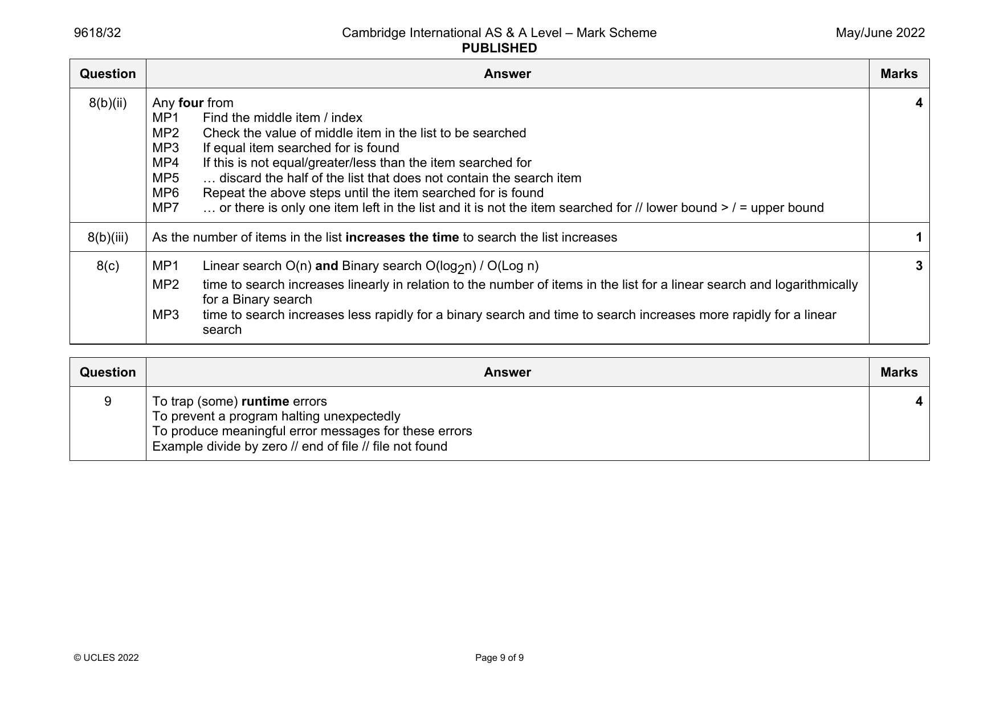
9 // LENGTH(MyList) - 1
Index + 1
"Value not found" (or any similar phrase)
8(b)(i) The list to be searched must be ordered/sorted 1
© UCLES 2022 Page 8 of 9
9 To trap (some) runtime errors 4
To prevent a program halting unexpectedly
To produce meaningful error messages for these errors
Example divide by zero // end of file // file not found
© UCLES 2022 Page 9 of 9
Official mark scheme pages: 8, 9 · source PDF URL
9618-2022-mj-33-q02
May/June 2022 · Paper 33 · Question 2 · 6 marks
2(a) type(caracal, wild). 2
hair(caracal, short).
2(b) persian 1
2(c)(i) type(Pet, domestic). 1
2(c)(ii) spots(WildSpotty, yes) 2
,type(WildSpotty, wild).
© UCLES 2022 Page 4 of 11
Official mark scheme pages: 4 · source PDF URL
9618-2022-mj-33-q07
May/June 2022 · Paper 33 · Question 7 · 11 marks
7(a) 1 mark per point 5
Acrylic has attribute Soft of type BOOLEAN
Wool has attribute WoolType with suitable data type
Acrylic and Wool have method YarnInfo()
Acrylic, Wool and Mix at least one inherit (one arrow correct) from Yarn …
… Acrylic, Wool and Mix all inherit (all arrows correct) from Yarn
Yarn
Name: STRING
Colour: STRING
BatchCode: STRING
Weight: INTEGER
NumberBalls: INTEGER
Type: STRING
Constructor()
EditNumberBalls()
YarnInfo()
Acrylic Wool Mix
WoolType: STRING Percentage: INTEGER
Soft: BOOLEAN
Constructor() Constructor()
Constructor() YarnInfo() YarnInfo()
YarnInfo()
© UCLES 2022 Page 9 of 11
7(b) Properties max 2: 6
the data items / attributes
the data types // characteristics
defined in a class
Methods max 2:
the procedures/ functions / programmed instructions in a
class / super class / base class
… implementing the behaviours
… that act on the properties / attributes
Inheritance max 2:
Methods and properties / attributes contained in one class/ super class / base class
Are made available to / reused by another class/ derived class
Question Answer Marks
Official mark scheme pages: 9, 10 · source PDF URL
9618-2022-on-31-q11
Oct/Nov 2022 · Paper 31 · Question 11 · 8 marks
11(a) One mark for each correct OOP term definition: 3
• Instance – an occurrence of an object // a specific object based on the class // an instantiation of a class.
• Inheritance – the capability of defining a new class of objects that has all the attributes and methods from a parent
class.
• Polymorphism – allows the same method to take on different behaviours depending on which class is instantiated //
methods can be redefined for derived classes.
© UCLES 2022 Page 12 of 15
11(b) One mark for each point: 5
• Car and ENDCLASS
• Four declarations – must use the identifiers used in the assignments
• Constructor header – must use CarBodyType
• Two assignments – must use CarMake
• Constructor identifier for the car model and the identifier in the Model assignment statement match
CLASS Car
PRIVATE Make : STRING
PRIVATE Model : STRING
PRIVATE BodyType : STRING
PRIVATE Fuel : STRING
PRIVATE NumberBuilt : INTEGER
PUBLIC PROCEDURE NEW (CarMake : STRING,
CarModel : STRING, CarBodyType : STRING)
Make CarMake
Model CarModel
BodyType CarBodyType
Fuel ""
NumberBuilt 0
ENDPROCEDURE
getFuel()
getNumberBuilt()
ENDCLASS
© UCLES 2022 Page 13 of 15
Official mark scheme pages: 12, 13 · source PDF URL
9618-2022-on-32-q10
Oct/Nov 2022 · Paper 32 · Question 10 · 6 marks
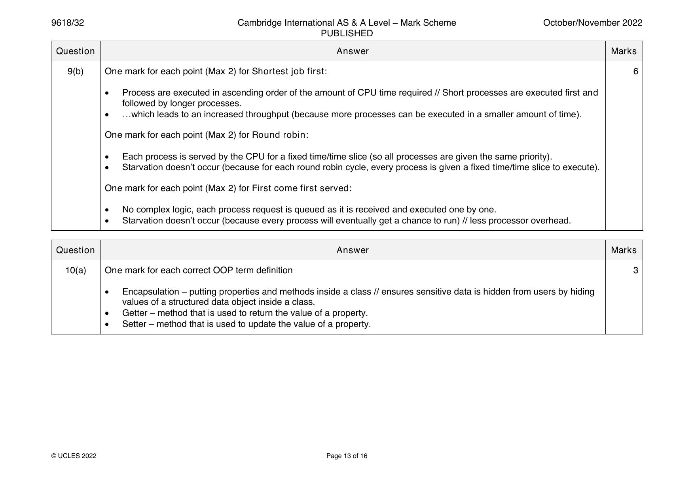
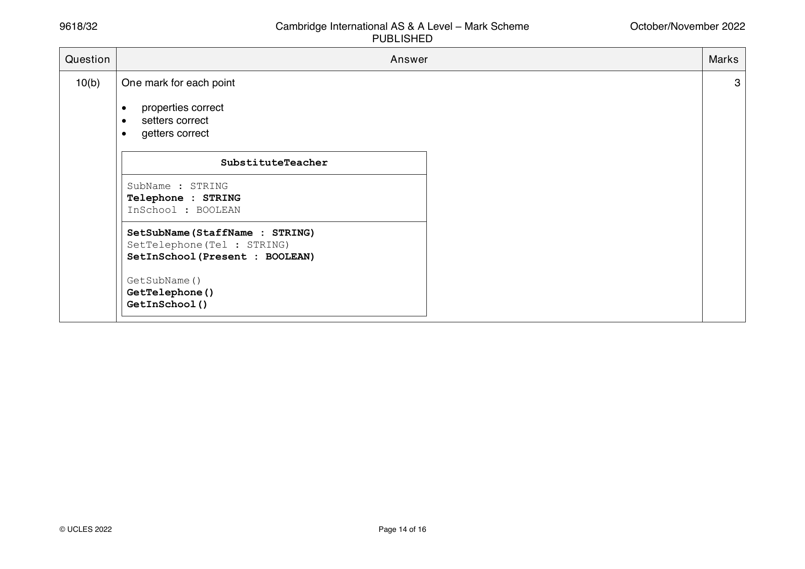
10(a) One mark for each correct OOP term definition 3
• Encapsulation – putting properties and methods inside a class // ensures sensitive data is hidden from users by hiding
values of a structured data object inside a class.
• Getter – method that is used to return the value of a property.
• Setter – method that is used to update the value of a property.
© UCLES 2022 Page 13 of 16
10(b) One mark for each point 3
• properties correct
• setters correct
• getters correct
SubstituteTeacher
SubName : STRING
Telephone : STRING
InSchool : BOOLEAN
SetSubName(StaffName : STRING)
SetTelephone(Tel : STRING)
SetInSchool(Present : BOOLEAN)
GetSubName()
GetTelephone()
GetInSchool()
© UCLES 2022 Page 14 of 16
Official mark scheme pages: 13, 14 · source PDF URL
9618-2022-on-33-q11
Oct/Nov 2022 · Paper 33 · Question 11 · 8 marks
11(a) One mark for each correct OOP term definition: 3
• Instance – an occurrence of an object // a specific object based on the class // an instantiation of a class.
• Inheritance – the capability of defining a new class of objects that has all the attributes and methods from a parent
class.
• Polymorphism – allows the same method to take on different behaviours depending on which class is instantiated //
methods can be redefined for derived classes.
© UCLES 2022 Page 12 of 15
11(b) One mark for each point: 5
• Car and ENDCLASS
• Four declarations – must use the identifiers used in the assignments
• Constructor header – must use CarBodyType
• Two assignments – must use CarMake
• Constructor identifier for the car model and the identifier in the Model assignment statement match
CLASS Car
PRIVATE Make : STRING
PRIVATE Model : STRING
PRIVATE BodyType : STRING
PRIVATE Fuel : STRING
PRIVATE NumberBuilt : INTEGER
PUBLIC PROCEDURE NEW (CarMake : STRING,
CarModel : STRING, CarBodyType : STRING)
Make CarMake
Model CarModel
BodyType CarBodyType
Fuel ""
NumberBuilt 0
ENDPROCEDURE
getFuel()
getNumberBuilt()
ENDCLASS
© UCLES 2022 Page 13 of 15
Official mark scheme pages: 12, 13 · source PDF URL
9618-2023-mj-31-q10
May/June 2023 · Paper 31 · Question 10 · 5 marks
10 One mark for each correctly completed line (Max 5) 5
DECLARE Account : STRING
OPENFILE "ActiveFile.txt" FOR READ
OPENFILE "ArchiveFile.txt" FOR WRITE
WHILE NOT EOF("ActiveFile.txt")
READFILE "ActiveFile.txt", Account
IF Account = "" THEN
WRITEFILE "ArchiveFile.txt", "Account not present"
ELSE
WRITEFILE "ArchiveFile.txt", Account
ENDIF
ENDWHILE
CLOSEFILE "ActiveFile.txt"
CLOSEFILE "ArchiveFile.txt"
Question Answer Marks
Official mark scheme pages: 8 · source PDF URL
9618-2023-mj-32-q04
May/June 2023 · Paper 32 · Question 4 · 4 marks
4 One mark for each correct line connecting an OOP term to its description 4
(Max 4).
OOP term Description
methods used to return the value of a
property
Encapsulation
the process of putting data and
methods together as a single unit
Getters
methods used to update the value of
a property
Polymorphism
allows methods to be redefined for
derived classes
Setters
enables the defining of a new class
that inherits from a parent class
Question Answer Marks
Official mark scheme pages: 6 · source PDF URL
9618-2023-mj-32-q06
May/June 2023 · Paper 32 · Question 6 · 9 marks
6(a) One mark for TYPE TAppointments and ENDTYPE correct 4
One mark for every two correct declarations (Max 3)
Example answer
TYPE TAppointments
DECLARE Name : STRING
DECLARE DateOfBirth : DATE
DECLARE Telephone : STRING
DECLARE LastAppointment : DATE
DECLARE NextAppointment : DATE
DECLARE TreatmentsComplete : BOOLEAN
ENDTYPE
6(b) One mark for each correctly completed line (Max 5) 5
DECLARE DentalRecord : ARRAY[1:250] OF TAppointments
DECLARE DentalFile : STRING
DECLARE Count : INTEGER
DentalFile "DentalFile.dat"
OUTPUT "The file ", DentalFile, " contains these records:"
OPENFILE DentalFile FOR RANDOM
Count 1
REPEAT
SEEK DentalFile, Count
GETRECORD DentalFile, DentalRecord[Count]
OUTPUT DentalRecord[Count]
Count Count + 1
UNTIL EOF(DentalFile)
CLOSEFILE DentalFile
Question Answer Marks
Official mark scheme pages: 7 · source PDF URL
9618-2023-mj-33-q10
May/June 2023 · Paper 33 · Question 10 · 5 marks
10 One mark for each correctly completed line (Max 5) 5
DECLARE Account : STRING
OPENFILE "ActiveFile.txt" FOR READ
OPENFILE "ArchiveFile.txt" FOR WRITE
WHILE NOT EOF("ActiveFile.txt")
READFILE "ActiveFile.txt", Account
IF Account = "" THEN
WRITEFILE "ArchiveFile.txt", "Account not present"
ELSE
WRITEFILE "ArchiveFile.txt", Account
ENDIF
ENDWHILE
CLOSEFILE "ActiveFile.txt"
CLOSEFILE "ArchiveFile.txt"
Question Answer Marks
Official mark scheme pages: 8 · source PDF URL
9618-2023-on-31-q08
Oct/Nov 2023 · Paper 31 · Question 8 · 8 marks
8(a) One mark for each correctly completed line (Max 5) 5
DECLARE Customer : TAccount
DECLARE Location : INTEGER
DECLARE AccountFile : STRING
AccountFile "AccountRecords.dat"
OPENFILE AccountFile FOR RANDOM
OUTPUT "Please enter an account number"
INPUT Customer.AccountNumber
Location Hash(Customer.AccountNumber)
SEEK AccountFile, Location
GETRECORD AccountFile, Customer
OUTPUT Customer
CLOSEFILE AccountFile
8(b) One mark for correct definition 1
(Exception handling is the process of) responding to an unexpected event
when the program is running so it does not halt unexpectedly
8(c) One mark per mark point (Max 2), for example: 2
• Programming errors
• User errors
• Hardware failure
• Runtime errors
© UCLES 2023 Page 6 of 9
Official mark scheme pages: 6 · source PDF URL
9618-2023-on-31-q11
Oct/Nov 2023 · Paper 31 · Question 11 · 8 marks
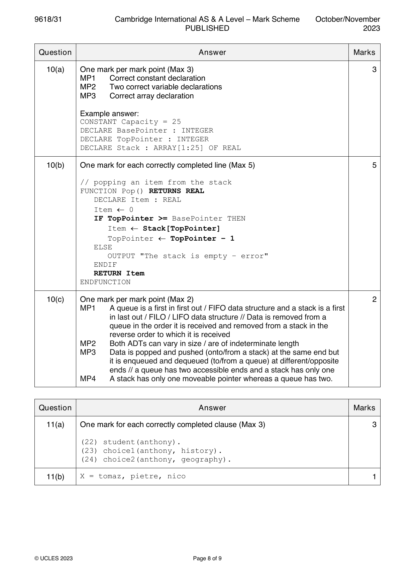
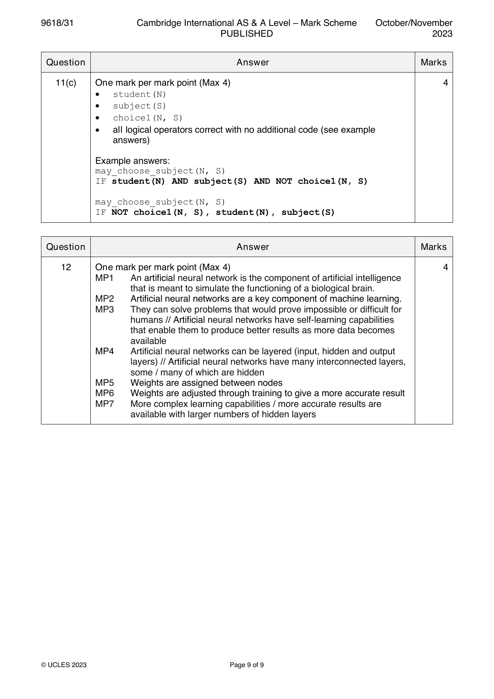
11(a) One mark for each correctly completed clause (Max 3) 3
(22) student(anthony).
(23) choice1(anthony, history).
(24) choice2(anthony, geography).
11(b) X = tomaz, pietre, nico 1
© UCLES 2023 Page 8 of 9
11(c) One mark per mark point (Max 4) 4
• student(N)
• subject(S)
• choice1(N, S)
• all logical operators correct with no additional code (see example
answers)
Example answers:
may_choose_subject(N, S)
IF student(N) AND subject(S) AND NOT choice1(N, S)
may_choose_subject(N, S)
IF NOT choice1(N, S), student(N), subject(S)
Question Answer Marks
Official mark scheme pages: 8, 9 · source PDF URL
9618-2023-on-32-q11
Oct/Nov 2023 · Paper 32 · Question 11 · 9 marks
11(a) One mark for each correctly completed clause (Max 4) 4
20 person(carlos).
21 hobby(cycling).
22 enjoys(carlos, cycling).
23 dislikes(carlos, music).
11(b) P = toby, nina 1
11(c) One mark per mark point (Max 4) 4
• person(N)
• hobby(H)
• dislikes(N, H)
• all logical operators correct with no additional code (see example
answers)
Example answers:
might_enjoy(N, H)
IF person(N) AND hobby(H) AND NOT dislikes(N, H)
might_enjoy(N, H)
IF NOT dislikes(N, H), person(N), hobby(H)
© UCLES 2023 Page 8 of 9
Official mark scheme pages: 8 · source PDF URL
9618-2023-on-32-q12
Oct/Nov 2023 · Paper 32 · Question 12 · 9 marks
12(a) One mark for description, for example: 2
An exception is an event that occurs during the execution of a program that
disrupts the normal flow of instructions / causes the program to halt execution
One mark for example:
• Hardware failure // hard disk crash
• Programming error // trying to access out-of-bounds array element // divide
by zero error // runtime error
• User error // typing incorrect filename / data type
12(b) One mark for each correctly completed blank (Max 7) 7
DECLARE Customer : TAccount
DECLARE Location : INTEGER
DECLARE MaxSize : INTEGER
DECLARE: FoundFlag : BOOLEAN
DECLARE SearchCustomer : STRING
MaxSize 1000
OPENFILE "AccountRecord.dat" FOR RANDOM
Location 1
FoundFlag FALSE
OUTPUT "Enter the customer’s name"
INPUT SearchCustomer
WHILE NOT FoundFlag AND Location <= MaxSize
SEEK "AccountRecord.dat", Location
GETRECORD "AccountRecord.dat", Customer
IF SearchCustomer = Customer.Name THEN
OUTPUT "Customer found: "
OUTPUT Customer
FoundFlag TRUE
ENDIF
Location Location + 1
ENDWHILE
IF NOT FoundFlag THEN
OUTPUT "Customer does not exist."
ENDIF
© UCLES 2023 Page 9 of 9
Official mark scheme pages: 9 · source PDF URL
9618-2023-on-33-q08
Oct/Nov 2023 · Paper 33 · Question 8 · 8 marks
8(a) One mark for each correctly completed line (Max 5) 5
DECLARE Customer : TAccount
DECLARE Location : INTEGER
DECLARE AccountFile : STRING
AccountFile "AccountRecords.dat"
OPENFILE AccountFile FOR RANDOM
OUTPUT "Please enter an account number"
INPUT Customer.AccountNumber
Location Hash(Customer.AccountNumber)
SEEK AccountFile, Location
GETRECORD AccountFile, Customer
OUTPUT Customer
CLOSEFILE AccountFile
8(b) One mark for correct definition 1
(Exception handling is the process of) responding to an unexpected event
when the program is running so it does not halt unexpectedly
8(c) One mark per mark point (Max 2), for example: 2
• Programming errors
• User errors
• Hardware failure
• Runtime errors
© UCLES 2023 Page 6 of 9
Official mark scheme pages: 6 · source PDF URL
9618-2023-on-33-q11
Oct/Nov 2023 · Paper 33 · Question 11 · 8 marks
11(a) One mark for each correctly completed clause (Max 3) 3
(22) student(anthony).
(23) choice1(anthony, history).
(24) choice2(anthony, geography).
11(b) X = tomaz, pietre, nico 1
© UCLES 2023 Page 8 of 9
11(c) One mark per mark point (Max 4) 4
• student(N)
• subject(S)
• choice1(N, S)
• all logical operators correct with no additional code (see example
answers)
Example answers:
may_choose_subject(N, S)
IF student(N) AND subject(S) AND NOT choice1(N, S)
may_choose_subject(N, S)
IF NOT choice1(N, S), student(N), subject(S)
Question Answer Marks
Official mark scheme pages: 8, 9 · source PDF URL
9618-2024-mj-31-q08
May/June 2024 · Paper 31 · Question 8 · 8 marks
8(a) One mark for each correctly completed clause (Max 3) 3
(23) feature(sliding_doors).
(24) available(sliding_doors, minivan).
(25) unavailable(sliding_doors, hatchback).
8(b) (Options =) sunroof, reversing_camera 1
8(c) One mark per mark point (Max 4) 4
MP1 feature(F)
MP2 bodystyle(B)
MP3 unavailable(F, B)
MP4 all correct Boolean operators and punctuation (allow , for AND) and no additional lines of code
Example answers
may_choose_option(F, B)
IF
feature(F) AND bodystyle(B) AND NOT unavailable(F, B).
feature(F), bodystyle(B), NOT unavailable(F, B).
Question Answer Marks
Official mark scheme pages: 11 · source PDF URL
9618-2024-mj-32-q10
May/June 2024 · Paper 32 · Question 10 · 9 marks
10(a) One mark for each correctly completed clause (Max 4) 4
Example answer
(25) client(jane).
(26) activity(surfing).
(27) choice(jane, surfing).
(28) done(jane, sailing).
10(b) (List =) frankie, erik, henry 1
10(c) One mark per mark point (Max 4) 4
MP1 client(C)
MP2 activity(A)
MP3 done(C, A)
MP4 all correct Boolean operators and punctuation (allow , for AND). There must be the correct number of terms and
no additional lines of code
Example answers
may_choose_activity(C, A)
IF
client(C) AND activity(A) AND NOT done(C, A).
client(C), activity(A), NOT (done(C, A)).
© Cambridge University Press & Assessment 2024 Page 13 of 14
Official mark scheme pages: 13 · source PDF URL
9618-2024-mj-33-q08
May/June 2024 · Paper 33 · Question 8 · 8 marks
8(a) One mark for each correctly completed clause (Max 3) 3
(23) feature(sliding_doors).
(24) available(sliding_doors, minivan).
(25) unavailable(sliding_doors, hatchback).
8(b) (Options =) sunroof, reversing_camera 1
8(c) One mark per mark point (Max 4) 4
MP1 feature(F)
MP2 bodystyle(B)
MP3 unavailable(F, B)
MP4 all correct Boolean operators and punctuation (allow , for AND) and no additional lines of code
Example answers
may_choose_option(F, B)
IF
feature(F) AND bodystyle(B) AND NOT unavailable(F, B).
feature(F), bodystyle(B), NOT unavailable(F, B).
Question Answer Marks
Official mark scheme pages: 11 · source PDF URL
9618-2024-on-31-q09
Oct/Nov 2024 · Paper 31 · Question 9 · 6 marks
9(a) To ensure that the attributes are only accessible using the class’s own methods/within the class. 1
9(b) One mark per mark point (Max 5) 5
MP1 Two correct attributes with sensible names and correct data types.
MP2 Constructor present.
MP3 Two correct setters with exact names and appropriate parameters and data types.
MP4 Two correct getters with appropriate names.
MP5 Name assigned to pet name getter matches the attribute.
Pet
PetID : STRING
PetType : STRING
OwnerTelephone : STRING
DateRegistered : DATE
PetName : STRING
OwnerName : STRING
Constructor()
SetPetID(APetID : STRING)
SetDateRegistered(RegDate : DATE)
GetPetName()
GetOwnerTelephone()
© Cambridge University Press & Assessment 2024 Page 12 of 17
Official mark scheme pages: 12 · source PDF URL
9618-2024-on-32-q10
Oct/Nov 2024 · Paper 32 · Question 10 · 6 marks
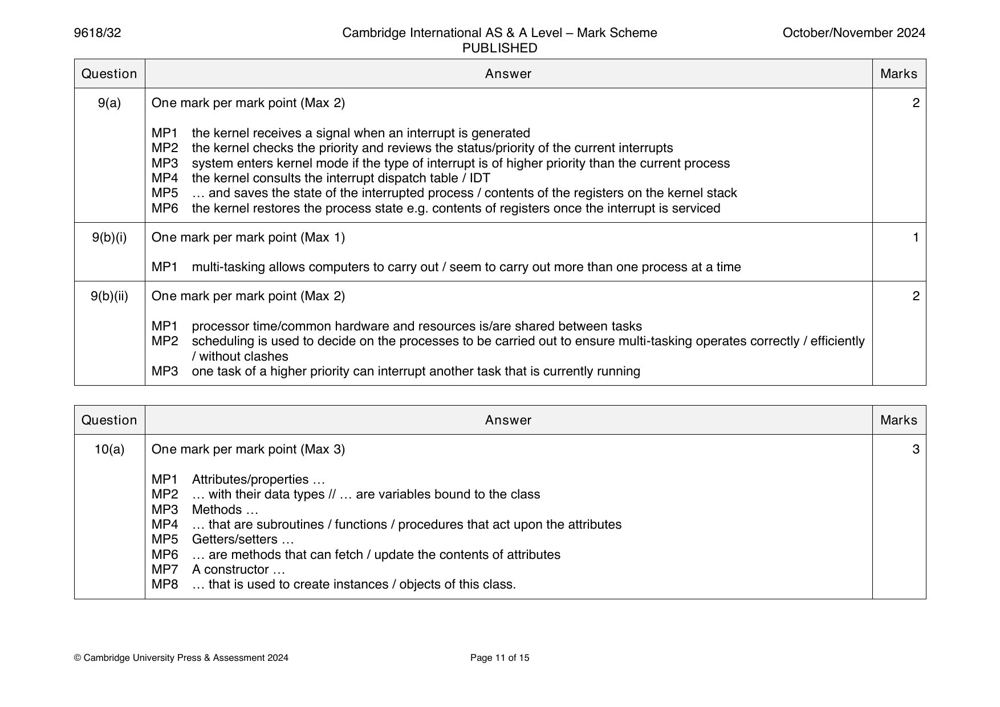
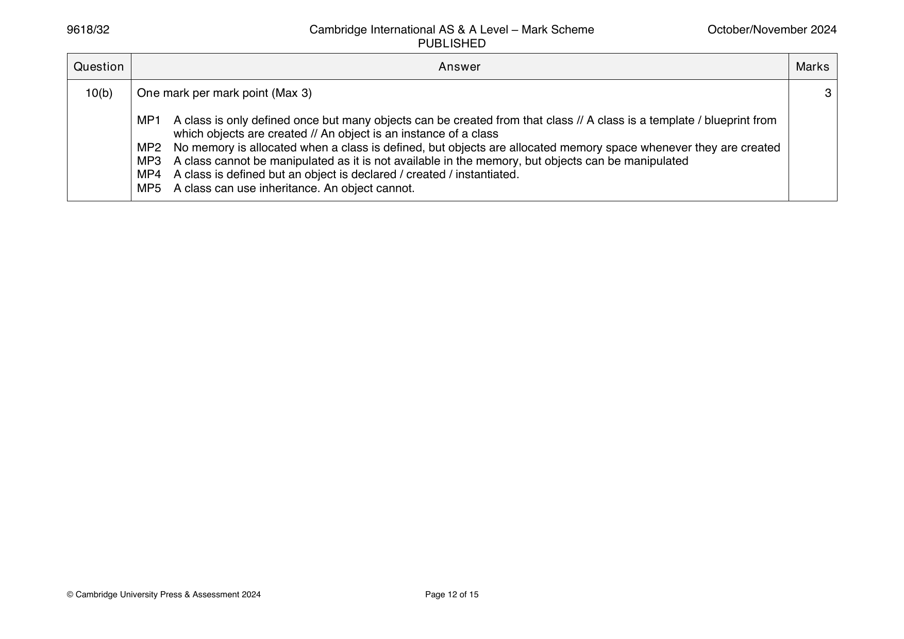
10(a) One mark per mark point (Max 3) 3
MP1 Attributes/properties …
MP2 … with their data types // … are variables bound to the class
MP3 Methods …
MP4 … that are subroutines / functions / procedures that act upon the attributes
MP5 Getters/setters …
MP6 … are methods that can fetch / update the contents of attributes
MP7 A constructor …
MP8 … that is used to create instances / objects of this class.
© Cambridge University Press & Assessment 2024 Page 11 of 15
10(b) One mark per mark point (Max 3) 3
MP1 A class is only defined once but many objects can be created from that class // A class is a template / blueprint from
which objects are created // An object is an instance of a class
MP2 No memory is allocated when a class is defined, but objects are allocated memory space whenever they are created
MP3 A class cannot be manipulated as it is not available in the memory, but objects can be manipulated
MP4 A class is defined but an object is declared / created / instantiated.
MP5 A class can use inheritance. An object cannot.
© Cambridge University Press & Assessment 2024 Page 12 of 15
Official mark scheme pages: 11, 12 · source PDF URL
9618-2024-on-33-q09
Oct/Nov 2024 · Paper 33 · Question 9 · 6 marks
9(a) To ensure that the attributes are only accessible using the class’s own methods/within the class. 1
9(b) One mark per mark point (Max 5) 5
MP1 Two correct attributes with sensible names and correct data types.
MP2 Constructor present.
MP3 Two correct setters with exact names and appropriate parameters and data types.
MP4 Two correct getters with appropriate names.
MP5 Name assigned to pet name getter matches the attribute.
Pet
PetID : STRING
PetType : STRING
OwnerTelephone : STRING
DateRegistered : DATE
PetName : STRING
OwnerName : STRING
Constructor()
SetPetID(APetID : STRING)
SetDateRegistered(RegDate : DATE)
GetPetName()
GetOwnerTelephone()
© Cambridge University Press & Assessment 2024 Page 12 of 17
Official mark scheme pages: 12 · source PDF URL
9618-2025-mj-31-q11
May/June 2025 · Paper 31 · Question 11 · 8 marks
11(a) One mark per mark point 5
MP1 Two correct attributes (PatientID : INTEGER and Doctor : STRING)
MP2 SetTreatments(…) and SetMedications(…) seen
MP3 … and appropriate parameters, with string data types
MP4 GetPatientID() and GetDoctor() seen
MP5 SetDateSeen(…) and GetDateSeen fully correct with appropriate parameter and correct data type in setter.
Appointment
DateSeen : DATE
PatientID : INTEGER
Doctor : STRING
Treatments : STRING
Medications : STRING
SetDateSeen(NewDate : DATE)
SetPatientID(PatientNumber : INTEGER)
SetDoctor(DoctorID : STRING)
SetTreatments(NewTreatments : STRING)
SetMedications(NewMedications : STRING)
GetDateSeen()
GetPatientID()
GetDoctor()
GetTreatments()
GetMedications()
11(b)(i) Encapsulation 1
11(b)(ii) One mark for each mark point (Max 2) 2
MP1 Inheritance is where a derived class takes properties / behaviours attributes / methods
MP2 … of a parent / super class / base class
MP3 The attributes / methods / properties taken from the parent / super class / base class can also be extended /
copied / used / changed / overwritten / overridden in the subclass.
© Cambridge University Press & Assessment 2025 Page 14 of 15
Official mark scheme pages: 14 · source PDF URL
9618-2025-mj-31-q12
May/June 2025 · Paper 31 · Question 12 · 5 marks
12 One mark for each correctly completed line (Max 5) 5
DECLARE Location : INTEGER
DECLARE Item : STRING
DECLARE Continue : BOOLEAN
DECLARE Answer : CHAR
Continue TRUE
OPENFILE "StockList.dat" FOR RANDOM
WHILE Continue
OUTPUT "Enter a location between 1 and 500: "
INPUT Location
SEEK "StockList.dat", Location
GETRECORD "StockList.dat", Item
IF Item = "" THEN
OUTPUT "This record is missing"
ELSE
OUTPUT "The item in stock is ", Item
ENDIF
OUTPUT "Another location (Y or N)?"
INPUT Answer
IF Answer <> 'Y' THEN
Continue FALSE
ENDIF
ENDWHILE
CLOSEFILE "StockList.dat"
OUTPUT "End of program"
© Cambridge University Press & Assessment 2025 Page 15 of 15
Official mark scheme pages: 15 · source PDF URL
9618-2025-mj-32-q12
May/June 2025 · Paper 32 · Question 12 · 8 marks
12(a) One mark per mark point 5
MP1 Two correct attributes (DateOfBirth : Date) and priority with a
sensible name and integer data type
MP2 SetPatientID(…) and SetDoctorID(…) seen
MP3 … and appropriate parameters, with string data types
MP4 GetPatientID() and GetDateOfBirth() seen
MP5 Priority setter and getter fully correct with name matching Priority
attribute, with appropriate parameter and correct data type.
Patient
PatientID : STRING
Name : STRING
DateOfBirth : DATE
Priority : INTEGER
DoctorID : STRING
SetPatientID(PatientNumber : STRING)
SetName(FullName : STRING)
SetDateOfBirth(DOB : DATE)
SetPriority(Urgency : INTEGER)
SetDoctorID(DocID : STRING)
GetPatientID()
GetName()
GetDateOfBirth()
GetPriority()
GetDoctorID()
12(b)(i) Instance // instantiation 1
12(b)(ii) One mark for each mark point 2
MP1 Polymorphism is when methods with the same name are redefined /
behave differently …
MP2 … in derived / inherited classes / subclasses
© Cambridge University Press & Assessment 2025 Page 11 of 12
Official mark scheme pages: 11 · source PDF URL
9618-2025-mj-32-q13
May/June 2025 · Paper 32 · Question 13 · 5 marks
13 One mark for each correctly completed line 5
DECLARE Grade : StudentResult
DECLARE Position : INTEGER
OPENFILE "CurrentResults.dat" FOR RANDOM
OPENFILE "StoredResults.dat" FOR RANDOM
FOR Position 1 TO 50
SEEK "CurrentResults.dat", Position
GETRECORD "CurrentResults.dat", Grade
IF Grade.ExamGrade = "" THEN
Grade.ExamGrade "Missing grade"
ENDIF
SEEK "StoredResults.dat", Position
PUTRECORD "StoredResults.dat", Grade
NEXT Position
CLOSEFILE "CurrentResults.dat"
CLOSEFILE "StoredResults.dat"
© Cambridge University Press & Assessment 2025 Page 12 of 12
Official mark scheme pages: 12 · source PDF URL
9618-2025-mj-33-q05
May/June 2025 · Paper 33 · Question 5 · 4 marks
5 One mark per correct answer (Max 4) 4
OOP Term Purpose
Getter A method that accesses the value of a property
Setter A method that changes the value of a property
Object An instantiation / instance of a class
Method A programmed function / procedure / subroutine
/ subprogram defined as part of a class
Question Answer Marks
Official mark scheme pages: 10 · source PDF URL
9618-2025-mj-33-q11
May/June 2025 · Paper 33 · Question 11 · 5 marks
11 One mark for each correctly completed line 5
DECLARE Location : INTEGER
DECLARE NewStock : STRING
DECLARE CurrentStock : STRING
DECLARE Stored : BOOLEAN
DECLARE Max : INTEGER
Max 100000
Stored FALSE
Location 1
OPENFILE "StockList.dat" FOR RANDOM
OUTPUT "Enter the new item you wish to store"
INPUT NewStock
WHILE NOT Stored AND Location <= Max
SEEK "StockList.dat", Location
GETRECORD "StockList.dat", CurrentStock
IF CurrentStock = "" THEN
PUTRECORD "StockList.dat", NewStock
Stored TRUE
ELSE
Location Location + 1
ENDIF
ENDWHILE
IF Stored = FALSE THEN
OUTPUT "The new stock item has not been stored as the file was full"
ENDIF
CLOSEFILE "StockList.dat"
© Cambridge University Press & Assessment 2025 Page 14 of 16
Official mark scheme pages: 14 · source PDF URL
9618-2025-on-31-q10
Oct/Nov 2025 · Paper 31 · Question 10 · 3 marks
10 One mark per mark point (Max 2) 3
MP1 Exception handling is a process that responds to unwanted / unexpected
events when a program runs
MP2 … to prevent the program / computer from stopping unexpectedly
One mark for example (Max 1)
MP3 Programming errors
MP4 User errors
MP5 Hardware failure // losing connection to a device such as a printer
© Cambridge University Press & Assessment 2025 Page 14 of 15
Official mark scheme pages: 14 · source PDF URL
9618-2025-on-32-q10
Oct/Nov 2025 · Paper 32 · Question 10 · 4 marks
10(a) One mark per mark point (Max 2) 2
MP1 Use an exception handling routine (to respond to unwanted / unexpected events when the program is running)
MP2 Use of try … except / catch // Generate some form of error message
10(b) One mark per mark point (Max 2) 2
MP1 Coding errors
MP2 User errors
MP3 Hardware failure // Losing connection to a device e.g. a printer
© Cambridge University Press & Assessment 2025 Page 15 of 17
Official mark scheme pages: 15 · source PDF URL
9618-2025-on-33-q12
Oct/Nov 2025 · Paper 33 · Question 12 · 5 marks
12(a) One mark per mark point (Max 3) 3
MP1 An exception is an unplanned / unexpected event that occurs
when a program is running
MP2 … due to an error in programming/logic that wasn’t detected during
program construction/compilation
MP3 The effect of an exception can be that the program halts
unexpectedly.
12(b) One mark per mark point (Max 2) 2
MP1 One mark for an example of an exception (see list in guidance)
MP2 One mark for the reason for the given exception
Example answer
Division by zero
The processor will not be able to evaluate this answer because a number
divided by zero is infinity, so the program will crash.
© Cambridge University Press & Assessment 2025 Page 14 of 16
Official mark scheme pages: 14 · source PDF URL